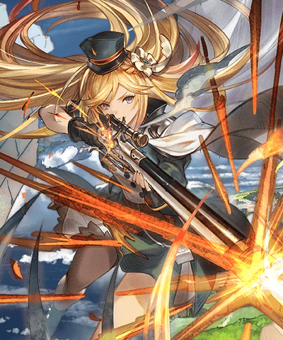
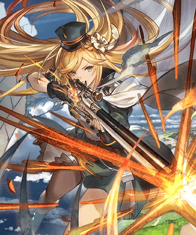

敵對心下降(被傷害機率約14.3%)
◆回合結束未受到傷害時，我方全體水屬性角色回復500HP/奧義值+10%
エリカ
基本資訊
| 定位 | 平衡 |
| 得意武器 | 銃 |
| 種族 | 人類 |
| CV | 戸松遥 |
立繪
上限解放前||上限解放後 

奧義
| ラモール･パドブーレ | |
| 水屬性4.5倍傷害 2技能CD歸0 賦予自己指令 |
主動技能
CD:7 |
オード･リュット |
| 自己以外的單體水屬性角色，無關回合經過攻擊一次 ◆消耗指令，此技能CD歸0> |
|
CD:8 |
オード･スティアン |
| 賦予單體水屬性角色以下效果 ・技能CD-1 ・爆擊機率上升(倍率20%/發動機率100%/3T) ・會心效果(3T) ・普攻賦予傷害+15%(天司類加算/3T) |
|
CD:6 |
グリッサード |
| 驅散敵方一個強化效果並賦予以下效果 ・防禦-25%(180秒) ・水屬性防禦-15%(180秒) |
被動技能
|
ラフィレット･デ･ロアンヌ |
| 攻擊力-20% 敵對心下降(被傷害機率約14.3%) ◆回合結束未受到傷害時，我方全體水屬性角色回復500HP/奧義值+10% |
|
|
オヌリアン・ソンリアン |
| 自己以外的水屬性角色進行無關回合經過攻擊時，追加90W無屬性傷害 |